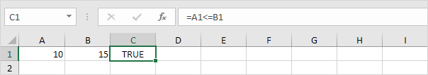
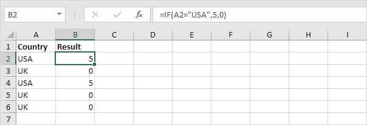
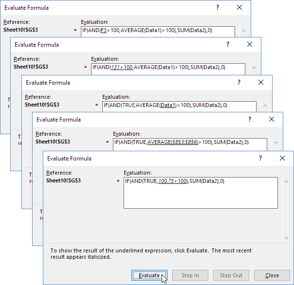
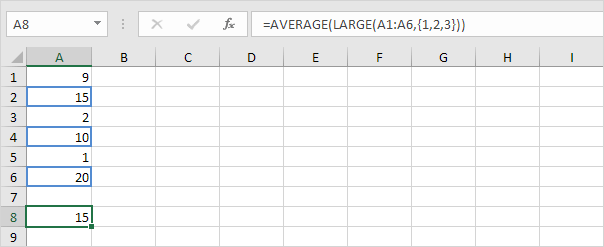

Rumus dan Fungsi
Masukkan Rumus | Mengedit Rumus | Prioritas Operator | Salin/Tempel Rumus | Sisipkan Fungsi
Sebuah rumus adalah ekspresi yang menghitung nilai sel. Fungsi adalah rumus yang telah ditentukan sebelumnya dan sudah tersedia di Excel. Misalnya, sel A3 di bawah ini berisi rumus yang menambahkan nilai sel A2 ke nilai sel A1.
Misalnya, sel A3 di bawah ini berisi fungsi SUM yang menghitung jumlah Range A1:A2.

Masukkan Formula
Untuk memasukkan rumus, jalankan langkah-langkah berikut.
Misalnya, ketikkan rumus A1+A2.
Tip: daripada mengetik A1 dan A2, cukup pilih sel A1 dan sel A2.
Ubah nilai sel A1 menjadi 3.

Excel secara otomatis menghitung ulang nilai sel A3. Ini adalah salah satu fitur Excel yang paling kuat!
Mengedit Formula
Saat Anda memilih sel, Excel memperlihatkan nilai atau rumus sel di bilah rumus.

Untuk mengedit rumus, klik di bilah rumus dan ubah rumus.

Tekan Enter.

Prioritas Operator
Excel menggunakan urutan default di mana perhitungan terjadi. Jika bagian dari rumus ada dalam tanda kurung, bagian itu akan dihitung terlebih dahulu. Kemudian melakukan perhitungan perkalian atau pembagian. Setelah ini selesai, Excel akan menambah dan mengurangi sisa rumus Anda. Lihat contoh di bawah ini.
Pertama, Excel melakukan perkalian (A1 * A2). Selanjutnya, Excel menambahkan nilai sel A3 ke hasil ini.
Contoh lain,

Pertama, Excel menghitung bagian dalam tanda kurung (A2+A3). Selanjutnya, hasil ini dikalikan dengan nilai sel A1.
Salin/Tempel Rumus
Saat Anda menyalin rumus, Excel secara otomatis menyesuaikan referensi sel untuk setiap sel baru tempat rumus disalin. Untuk memahaminya, lakukan langkah-langkah berikut.
Masukkan rumus yang ditunjukkan di bawah ini ke dalam sel A4.

Pilih sel A4, klik kanan, lalu klik Salin (atau tekan CTRL + c)...

... selanjutnya, pilih sel B4, klik kanan, lalu klik Tempel di bawah 'Opsi Tempel:' (atau tekan CTRL + v).

Anda juga dapat menyeret rumus ke sel B4. Pilih sel A4, klik di sudut kanan bawah sel A4 dan seret ke sel B4. Ini jauh lebih mudah dan memberikan hasil yang sama persis!

Hasil. Rumus di sel B4 mereferensikan nilai di kolom B.

Sisipkan Fungsi
Setiap fungsi memiliki struktur yang sama. Misalnya, SUM(A1:A4). Nama fungsi ini adalah SUM. Bagian antara tanda kurung (argumen) berarti kami memberikan Excel Range A1:A4 sebagai input. Fungsi ini menambahkan nilai dalam sel A1, A2, A3 dan A4. Tidak mudah untuk mengingat fungsi dan argumen mana yang digunakan untuk setiap tugas. Untungnya, fitur Sisipkan Fungsi di Excel membantu Anda dalam hal ini.
Untuk menyisipkan fungsi, jalankan langkah-langkah berikut.
Klik tombol Sisipkan Fungsi.

Kotak dialog 'Sisipkan Fungsi' muncul.
Cari fungsi atau pilih fungsi dari kategori. Misalnya, pilih COUNTIF dari kategori Statistik.

Klik Oke.
Kotak dialog 'Argumen Fungsi' muncul.
Klik Oke.

Hasil. Fungsi COUNTIF menghitung jumlah sel yang lebih besar dari 5.

Catatan: daripada menggunakan fitur Sisipkan Fungsi, cukup ketik =COUNTIF(A1:C2,">5"). Saat Anda tiba di: =COUNTIF( alih-alih mengetik A1:C2, cukup pilih Range A1:C2.
Fungsi yang Paling Banyak Digunakan
1. COUNT
Untuk menghitung jumlah sel yang berisi angka, gunakan fungsi COUNT di Excel.

Catatan: gunakan COUNTA untuk menghitung semua sel yang tidak kosong. COUNTA adalah singkatan dari hitung semua.
2. SUM
Untuk menjumlahkan Range sel, gunakan fungsi SUM di Excel. Fungsi SUM di bawah ini menjumlahkan semua nilai di kolom A.


Catatan: Anda juga dapat menggunakan fungsi SUM untuk menjumlahkan seluruh baris. Misalnya, =SUM(5:5) menjumlahkan semua nilai di baris ke-5.
3. IF
Fungsi IF memeriksa apakah suatu kondisi terpenuhi, dan mengembalikan satu nilai jika benar dan nilai lain jika salah.

Penjelasan: jika skor lebih besar dari atau sama dengan 60, Fungsi IF yang ditunjukkan di atas mengembalikan Pass (Lulus), jika tidak mengembalikan maka Fail (Gagal). Untuk menyalin rumus ini dengan cepat ke sel lain, klik di sudut kanan bawah sel C2 dan seret ke bawah ke sel C6.
IF (Jika) Contoh IF Sederhana | AND/OR Kriteria | IF bersarang (Nested If) | Lebih lanjut mengenai IF
Fungsi IF adalah salah satu fungsi yang paling banyak digunakan di Excel . Halaman ini berisi banyak contoh IF yang mudah diikuti. Contoh IF Sederhana Fungsi IF memeriksa apakah suatu kondisi terpenuhi, dan mengembalikan satu nilai jika benar dan nilai lain jika salah. 1a. Misalnya, lihat fungsi IF di sel B2 di bawah ini. Penjelasan: jika harga lebih besar dari 500, fungsi IF mengembalikan High, jika tidak mengembalikan Low. 1b. Fungsi IF berikut menghasilkan hasil yang sama persis.
Catatan: Anda dapat menggunakan operator perbandingan berikut : = (sama dengan), > (lebih besar dari), < (kurang dari), >= (lebih besar atau
sama dengan), <= (kurang dari atau sama dengan) dan <> (tidak sebanding dengan).
Operator Perbandingan (Comparison
Operators) Sama dengan | Lebih besar dari | Kurang
dari | Lebih besar dari atau sama dengan | Kurang dari atau
sama dengan | Tidak sebanding dengan Gunakan operator perbandingan di Excel untuk memeriksa apakah dua nilai sama satu sama lain, jika satu nilai lebih besar dari nilai lain, jika satu nilai kurang dari nilai lain, dll.
Sama dengan Operator sama dengan (=) mengembalikan TRUE jika dua nilai sama satu sama lain.
1. Misalnya, lihat rumus di sel C1 di bawah ini. Penjelasan: rumus mengembalikan TRUE karena nilai di sel A1 sama dengan nilai di sel B1. Selalu awali rumus dengan tanda sama dengan (=).
2. Fungsi IF di bawah ini menggunakan operator sama dengan. Penjelasan: jika dua nilai (angka atau string teks) sama satu sama lain, Fungsi IF mengembalikan
Ya, jika tidak mengembalikan Tidak.
Lebih besar dari Operator lebih besar dari (>) mengembalikan TRUE jika nilai pertama lebih besar dari nilai kedua. 1. Misalnya, lihat rumus di sel C1 di bawah ini. Penjelasan: rumus mengembalikan TRUE karena nilai di sel
A1 lebih besar dari nilai di sel B1. 2. Fungsi OR di bawah ini menggunakan operator lebih besar dari.
Penjelasan: fungsi OR ini mengembalikan TRUE jika setidaknya satu nilai lebih besar dari 50, selain itu mengembalikan FALSE.
Kurang dari Operator kurang dari (<) mengembalikan TRUE jika nilai pertama lebih kecil dari nilai kedua. 1. Misalnya, lihat rumus di sel C1 di bawah ini. Penjelasan: rumus mengembalikan TRUE karena nilai di sel
A1 lebih kecil dari nilai di sel B1. 2. Fungsi AND di bawah ini menggunakan operator kurang dari. Penjelasan: fungsi AND ini mengembalikan
TRUE jika kedua nilai kurang dari 80, selain itu mengembalikan
FALSE.
Lebih dari atau sama dengan
Operator lebih besar dari atau sama dengan (>=) mengembalikan TRUE jika nilai pertama lebih besar dari atau sama dengan nilai kedua.
1. Misalnya, lihat rumus di sel C1 di bawah ini. Penjelasan: rumus mengembalikan TRUE karena nilai di sel
A1 lebih besar atau sama dengan nilai di sel B1. 2. Fungsi COUNTIF di bawah ini menggunakan operator yang lebih besar atau sama dengan. Penjelasan: fungsi COUNTIF ini menghitung jumlah sel yang lebih besar atau sama dengan 10.
Kurang dari atau sama dengan
Operator kurang dari atau sama dengan (<=) mengembalikan TRUE jika nilai pertama lebih kecil atau sama dengan nilai kedua. 1. Misalnya, lihat rumus di sel C1 di bawah ini.  Penjelasan: rumus mengembalikan TRUE karena nilai di sel
A1 kurang dari atau sama dengan nilai di sel B1. 2. Fungsi SUMIF di bawah ini menggunakan operator kurang dari atau sama dengan. Penjelasan: fungsi SUMIF ini menjumlahkan nilai dalam Range
A1:A5 yang kurang dari atau sama dengan
10.
Tidak sebanding dengan Operator tidak sama dengan (<>) mengembalikan TRUE jika dua nilai tidak sama satu sama lain. 1. Misalnya, lihat rumus di sel C1 di bawah ini. Penjelasan: rumus mengembalikan TRUE karena nilai di sel
A1 tidak sama dengan nilai di sel B1. 2. Fungsi IF di bawah ini menggunakan operator tidak sama dengan.
Penjelasan: jika dua nilai (angka atau string teks) tidak sama satu sama lain, Fungsi IF mengembalikan Tidak, jika tidak mengembalikan Ya. 2. Selalu sertakan teks dalam tanda kutip ganda. IF sederhana di Excel"> 3a. Rumus di bawah ini menghitung kemajuan antara dua titik waktu. 3b. Anda dapat menggunakan Fungsi IF untuk menampilkan string kosong jika nilai akhir belum dimasukkan (lihat baris 5). Penjelasan: jika nilai akhir tidak kosong (<> berarti tidak sama dengan), Fungsi IF menghitung kemajuan antara nilai awal dan akhir, selain itu akan menampilkan string kosong (dua tanda kutip ganda tanpa apa pun
di antaranya). AND/OR Kriteria Gunakan Fungsi IF dalam kombinasi dengan fungsi AND dan
fungsi OR dan jadilah ahli Excel.
1. Sebagai contoh, perhatikan Fungsi IF pada sel D2 di bawah ini.
Penjelasan: fungsi AND mengembalikan TRUE jika skor pertama lebih besar atau sama dengan 60 dan skor kedua lebih besar atau sama dengan 90, selain itu mengembalikan FALSE. Jika TRUE, Fungsi IF mengembalikan Pass, jika
FALSE, Fungsi IF mengembalikan Fail.
2. Sebagai contoh, perhatikan Fungsi IF pada sel D2 di bawah ini.
Penjelasan: fungsi OR mengembalikan TRUE jika setidaknya satu skor lebih besar dari atau sama dengan 60, selain itu mengembalikan FALSE. Jika
TRUE, Fungsi IF mengembalikan Pass, jika FALSE, Fungsi IF mengembalikan Fail.
3. Sebagai contoh, perhatikan Fungsi IF pada sel D2 di bawah ini.
Penjelasan: fungsi AND di atas memiliki dua argumen yang dipisahkan oleh koma (Tabel, Hijau atau Biru). Fungsi AND mengembalikan TRUE jika Produk sama dengan "Tabel" dan Warna sama dengan "Hijau"
atau "Biru". Jika TRUE, Fungsi IF mengurangi harga sebesar 50%, jika
FALSE, Fungsi IF mengurangi harga sebesar 10%. IF bersarang (Nested
If) Fungsi IF di Excel bisa disarangkan, saat Anda memiliki beberapa kondisi yang harus dipenuhi. Nilai FALSE digantikan oleh Fungsi IF lain untuk melakukan pengujian lebih lanjut. 1. Misalnya, lihat rumus IF bersarang (Nested
If) di sel C2 di bawah ini.
Penjelasan: jika skor sama dengan 1, rumus IF bersarang
(Nested If) menghasilkan Buruk, jika skor sama dengan 2, rumus IF bersarang (Nested If)
menghasilkan Baik, jika skor sama dengan 3, rumus IF bersarang (Nested If) menghasilkan Sangat Baik, jika tidak maka mengembalikan Tidak Valid. Jika Anda memiliki Excel 2016 atau
lebih baru, cukup gunakan fungsi IFS . 2. Misalnya, lihat rumus IF bersarang (Nested
If) di sel C2 di bawah ini.
Penjelasan: jika skor kurang dari 60, rumus IF bersarang
(Nested If) mengembalikan F, jika skor lebih besar atau sama dengan 60 dan kurang dari 70, rumus mengembalikan D, jika skor lebih besar atau sama dengan 70 dan kurang dari 80, rumus mengembalikan
C, jika skor lebih besar atau sama dengan 80 dan kurang dari 90, rumus mengembalikan B, selain itu mengembalikan A. Lebih lanjut mengenai IF Fungsi IF adalah fungsi yang bagus. Mari kita lihat beberapa contoh keren lainnya. 1. Misalnya, gunakan IF dan AND untuk menguji apakah suatu nilai berada di antara dua angka. Penjelasan: fungsi AND mengembalikan
TRUE jika orang tersebut lebih tua dari 12 tahun dan lebih muda dari 20 tahun, selain itu mengembalikan FALSE. Jika TRUE, fungsi IF mengembalikan
Ya, jika FALSE, fungsi IF mengembalikan
Tidak.
2. Anda dapat menggabungkan IF dengan AVERAGE, SUM dan fungsi Excel lainnya. Langit adalah batasnya!
Penjelasan: fungsi AND mengembalikan TRUE jika nilai input lebih besar dari 100 dan rata-rata nilai dalam Range bernama Data1 lebih besar dari
100, selain itu mengembalikan FALSE. Jika TRUE, fungsi IF mengembalikan jumlah Data2, jika FALSE, Fungsi IF mengembalikan 0. Bingung? Anda selalu dapat menggunakan alat Evaluasi Rumus untuk menelusuri rumus IF Anda. Alat Excel ini membantu Anda memahami rumus. 3. Misalnya, pilih sel G3 di atas. 4. Pada tab Rumus, dalam grup Audit Rumus, klik Evaluasi Rumus.
5. Klik Evaluasi beberapa kali.  Catatan: coba sendiri. Unduh file Excel dan pilih salah satu rumus
IF yang dijelaskan di halaman ini. Anda dapat menggunakan alat ini untuk menelusuri semua jenis rumus.
Selengkapnya IF


Operator Perbandingan


4. RATA-RATA
Untuk menghitung rata-rata sekelompok angka, gunakan fungsi AVERAGE (tidak ada ilmu roket di sini). Rumus di bawah ini menghitung rata-rata dari 3 angka teratas dalam Range A1:A6.

Penjelasan: fungsi LARGE mengembalikan konstanta array {20,15,10}. Konstanta array ini digunakan sebagai argumen untuk fungsi AVERAGE , memberikan hasil 15.
5. COUNTIF
Fungsi COUNTIF di bawah ini menghitung jumlah sel yang berisi persis bintang + serangkaian karakter nol atau lebih.

Penjelasan: tanda bintang (*) cocok dengan serangkaian karakter nol atau lebih. Kunjungi halaman kami tentang fungsi COUNTIF untuk informasi dan contoh lebih lanjut.
6. SUMIF
Fungsi SUMIF di bawah ini menjumlahkan nilai dalam Range B1:B5 jika sel yang sesuai dalam Range A1:A5 berisi persis lingkaran + 1 karakter.

Penjelasan: tanda tanya (?) cocok dengan tepat satu karakter. Kunjungi halaman kami tentang fungsi SUMIF untuk informasi dan contoh lebih lanjut.
7. VLOOKUP
Fungsi VLOOKUP di bawah ini mencari nilai 53 (argumen pertama) di kolom paling kiri dari tabel merah (argumen kedua). Nilai 4 (argumen ketiga) memberi tahu fungsi VLOOKUP untuk mengembalikan nilai pada baris yang sama dari kolom keempat tabel merah.

Catatan: kunjungi halaman kami tentang fungsi VLOOKUP untuk mempelajari lebih lanjut tentang fungsi Excel yang hebat ini.
8. MIN
Untuk mencari nilai minimum, gunakan fungsi MIN. Ini sesederhana kedengarannya.

9. MAX
Untuk mencari nilai maksimum, gunakan fungsi MAX.

Catatan: kunjungi bab kami tentang fungsi statistik untuk mempelajari lebih lanjut tentang Excel dan Statistik.
10. SUMPRODUCT
Untuk menghitung jumlah produk dari angka yang sesuai dalam satu atau beberapa Range, gunakan fungsi SUMPRODUCT Excel yang kuat.

Penjelasan: fungsi SUMPRODUCT melakukan perhitungan ini: (2 * 1000) + (4 * 250) + (4 * 100) + (2 * 50) = 3500.
Bab
Count AND SUM
Logika
Referensi Sel
Tanggal Waktu
Teks
Pencarian & Referensi
Keuangan
Statistik
Bulat
Kesalahan Rumus
Rumus Array
Fungsi
Temukan bagaimana fungsi di Excel membantu Anda menghemat waktu. Jika Anda baru mengenal fungsi di Excel, kami menyarankan Anda untuk membaca pengantar kami tentang Rumus dan Fungsi terlebih dahulu.
Count AND SUM : Fungsi yang paling banyak digunakan di Excel adalah fungsi count dan SUM. Anda dapat menghitung dan menjumlahkan berdasarkan satu kriteria atau beberapa kriteria.
Logika : Pelajari cara menggunakan fungsi logika Excel, seperti IF, AND, OR dan NOT.
Referensi Sel : Referensi sel di Excel sangat penting. Pahami perbedaan antara referensi relatif, absolut, dan campuran, dan Anda sedang menuju kesuksesan.
Tanggal & Waktu : Untuk memasukkan tanggal, gunakan karakter "/" atau "-". Untuk memasukkan waktu, gunakan ":" (titik dua).
Teks : Excel memiliki banyak fungsi untuk ditawarkan dalam hal memanipulasi string teks.
Pencarian & Referensi : Pelajari semua tentang fungsi pencarian & referensi Excel, seperti VLOOKUP, HLOOKUP, MATCH, INDEX dan CHOOSE.
Financial: Bab ini menggambarkan fungsi keuangan Excel yang paling populer.
Statistik: Gambaran umum dari beberapa fungsi statistik yang sangat berguna di Excel.
Round: Bab ini menggambarkan tiga fungsi untuk membulatkan angka di Excel. ROUND, ROUNDUP dan ROUNDDOWN.
Rumus Kesalahan: Bab ini mengajarkan Anda bagaimana menangani beberapa kesalahan rumus umum.
Rumus Array: Bab ini membantu Anda memahami rumus array di Excel. Rumus array sel tunggal melakukan beberapa perhitungan dalam satu sel.